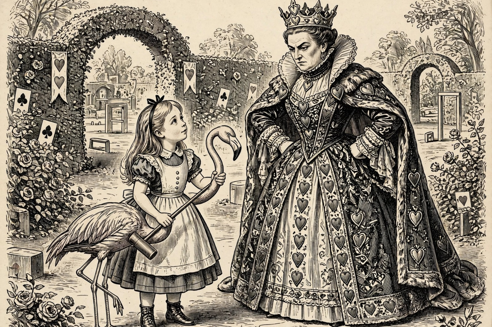

Welcome to Wonderland
Welcome to my e-book version of Alice's Adventures in Wonderland by Lewis Carroll. I chose this book because it is a classic story about curiosity and imagination.
In this e-book you will find the first three chapters. Alice follows a White Rabbit down a rabbit hole and finds herself in a strange world where everything is upside down.
Use the navigation at the top or bottom of each page to move between chapters.